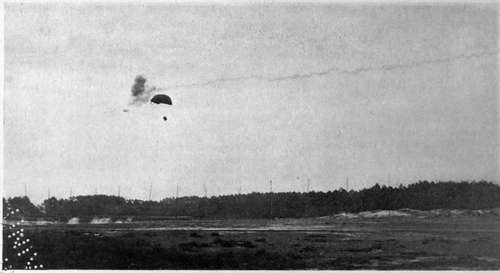

The Flying Machine In War. Part 4
Description
This section is from the book "The New Art Of Flying", by Waldemar Kaempffert. Also available from Amazon: The New Art of Flying.
The Flying Machine In War. Part 4
The question of ammunition most suitable for guns is also receiving attention in Germany. The Düsseldorf firm mentioned has introduced a combined shrapnel and ordinary shell for use against both dirigibles and aeroplanes. This new form of shrapnel differs from that which is ordinarily fired in so far as, after the explosion of the shrapnel part, the shell part is carried on to the target, or to the ground, where it detonates, giving off in its flight an observable cloud of smoke. A somewhat similar projectile is also made by the Krupps. The trail of smoke serves the purpose of indicating how close the projectile came to its mark (Figs. 76 and 77).
Fig. 77. A projectile that hit its mark.
Not upon such artillery and shells and shrapnel will the enemy rely, but on aeroplanes and airships of his own. He must fight steel with steel. When he sees a black speck in the sky, moving toward him, he gives a quick command. A monoplane or a biplane, perhaps two, start with a whirr from his camp and soar to meet that speck. When machine encounters machine in the sky, what will happen? They dare not ram each other. That would mean the inevitable destruction of both; for the two would surely fall, a mass of twisted and splintered metal and wood. They must fire at each other. But with what? Not with revolvers or rifles, for their range is too small for effective shooting at an aeroplane wheeling around some thousands of yards away; not with a field-piece, for it could not be carried on so light a contrivance; but with a machine-gun of especially light construction, a mitrailleuse which will pour forth so many hundred shots a minute in a steady stream, like a jet of water spouting from a hose. That battle in the sky will be won by the swiftest and most readily controlled flying-machine, — by the aeroplane, in a word, which can run and choose its own position and range.
The question may well be asked: What will be the relation of dirigible to aeroplane? Will the one type displace the other? Both types will probably be necessary. The dirigible and the aeroplane will bear to each other the relation of battleship to torpedo boat. In actual war each combatant will have a fleet of both airships and aeroplanes. When an enemy appears it will be the first duty of the opposing fleet to attack him. The home fleet will have a certain advantage because it will be nearer its base. It is not likely that an attacking fleet will sail over an enemy's country unless it is able to destroy the home fleet.
What chance has the dirigible against the aeroplane in an aerial battle? Because of its greater speed the aeroplane has the advantage of fighting or running. Moreover, the dirigible being a most expensive machine, there are always likely to be more aeroplanes than airships, so that many aeroplanes can be opposed to a single dirigible, just as many torpedo boats are sent against a single battleship on the theory that one at least will deal a fatal blow.
Its great speed gives the aeroplane an immeasurable advantage over the dirigible even in scouting. Suppose that a frontier several miles long is patrolled by a fleet of dirigibles, and suppose that a considerable number of hostile aeroplanes is available to ascertain the position and strength of the enemy beyond that frontier. No reasonable number of dirigibles could alone protect that frontier from invasion. The blockade can always be run. However well the line may be protected, there will be spaces where the aeroplane can cross and recross after having taken all the observations required.
For actual fighting purposes the aeroplane cannot as yet be reckoned with. It can be armed only with the lightest gun and can carry only a very limited amount of ammunition and men. The dirigible, on the other hand, can carry a crew of twenty-six and can be fitted with guns much above rifle-calibre. It can remain in the air thirty or forty hours, and in that time travel several hundred miles. When the aeroplane can carry a couple of fighting men in addition to the pilot, and these can be armed with something in the nature of a machine-gun, the efficiency of aeroplanes will be far increased if they can cruise in fleets against isolated dirigibles. The small target and high speed of the aeroplane will be in its favour, even though its opponent will be more heavily armed. Moreover the inevitable confusion attending a combat waged upwards and downwards and on all sides should offer many a chance to a daring fighter of delivering a telling blow.
It has been urged that if the aeroplane once gets above the dirigible the fate of the latter is sealed; for the gas bag prevents the dirigible from firing at the aeroplane. It may well be that gun-platforms will be arranged on top with a conning-tower projecting from the car below, through the gas bag. Such a construction has been proposed in Germany. At present the dirigible can ascend to heights which the aeroplane has not yet reached. The rarity of air at altitudes of over a mile has an important effect on the operation of the aeroplane engine. Most of the men who have soared to great heights in aeroplanes have found that their motors stopped at a certain elevation, and a motor that stops places the pilot in the position of a balloonist whose gas has leaked away. If the aeroplane can choose its own range because of superior speed, the dirigible can at least choose its own elevation. Yet even here there are limitations to be observed. As a dirigible rises its gas expands. To prevent the bursting of the envelope, gas must be allowed to escape. Hence when the dirigible drops again to a lower level, its ascensional power has been considerably curtailed.
Command of the air, like command of the sea, will depend on men and material. Without men of courage and skill, flying-machines are useless. Without efficient flying-machines, on the other hand, it is obvious that men cannot fly. The situation is much the same in that respect as in naval affairs. England has dominated the sea because she has had the ships and a well-trained industrious body of civilians to fight them. Acquisition of material is merely a matter of spending money. The nation that spends the most money will have the most numerous and best equipped air navy. In the case of war in the air, as at sea, success will depend not only on abundant material, but on the ability to supply wastage of war, which is enormous and increases in enormity as the material becomes more complicated and costly. In matters of armament, however, cost is not the guiding principle. Nothing is so expensive as defeat, and to avoid defeat the most efficient aircraft must be provided in sufficient numbers. Battles, aerial or terrestrial, are won as much by money as by hard fighting.
Continue to: